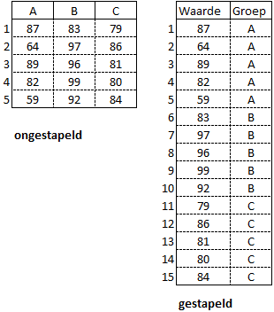

De t-toets, ook wel Student toets geheten, wordt gebruikt om hypotheses over het gemiddelde van een populatie of twee populaties te toetsen. De t-verdeling zit dicht tegen de normale verdeling aan en wordt bij een kleine steekproef (30 of minder waarnemingen) uit een normale verdeling met onbekende \(\sigma\) gebruikt. Wanneer de steekproef groot genoeg is (n > 30) kan de t-toets ook gebruikt worden wanneer de data niet normaal verdeeld is (volgens centrale limietstelling).
Er zijn drie soorten t-toetsen:
t-toets voor één steekproef - Als toets voor de nulhypothese dat het gemiddelde van een normaal verdeelde populatie gelijk is an een bepaalde vooraf gespecificeerde waarde \(\mu_0\).
t-toets voor twee onafhankelijke steekproeven - Als toets voor de nulhypothese dat de gemiddelden van twee normaal verdeelde populaties aan elkaar gelijk zijn.
t-toets voor twee gepaarde steekproeven De gemiddeldes van twee gepaarde steekproeven met elkaar vergelijken. Bij gepaarde steekproeven correspondeert een waarde in de ene steekproef met een bepaalde waarde in de andere steekproef. Hierbij gaat \(H_0\) er vanuit dat de twee gemiddeldes hetzelfde zijn en de alternatieve hypothese dat dit niet het geval is.
Syntax: t.test(x, ...)
Argumenten:
x: numerieke vector met waarnemingen
y: numerieke vector met waarnemingen (optioneel)
alternative: tekst die de alternatieve hypothese specificeert, keuzes “two.sided” (default), “less”, “greater”
mu: getal dat de werkelijke waarde van het gemiddelde aangeeft (of verschil in gemiddelden bij een test met twee steekproeven).
paired: logische aanduiding of je een gepaarde t-toets wilt, FALSE (default) of TRUE (dan zowel x als y specificeren).
var.equal: logische aanduiding of de twee varianties als gelijk moeten worden behandeld, FALSE (default) of TRUE.
conf.level = 0.95, getal voor het betrouwbaarheidsinterval, defaultwaarde 0.95
formula: een formule (optioneel)
6.1 t-toets voor 1 steekproef
Voorbeeld 6.1 Een bedrijf stelt dat gemiddeld hoogstens 200 vervuilingseenheden (VE’s) per dag geloosd worden. De resultaten van een controle op 10 willekeurige dagen zijn: 190, 250, 320, 410, 310, 280, 230, 370, 350, 290. Toets of het bedrijf gelijk heeft met \(\alpha = 0.01\).
(Bron: boek Buijs, hfst. 9, voorbeeld 11)
De hypothesen worden als volgt geformuleerd:
\(H_0: \mu \le 200\)
\(H_1: \mu \gt 200\) (Dus een rechts eenzijdige toetsing)
Toetsingsgrootheid \(\bar{x}\) : het steekproefgemiddelde
\(\bar{x} \sim t\)
ve <-c(190, 250, 320, 410, 310, 280, 230, 370, 350, 290)t.test(x = ve, mu =200, alternative =c("greater"), conf.level =0.99)
One Sample t-test
data: ve
t = 4.7434, df = 9, p-value = 0.0005269
alternative hypothesis: true mean is greater than 200
99 percent confidence interval:
240.5189 Inf
sample estimates:
mean of x
300
De berekende t-waarde 4.74 heeft een p-waarde van 0.0005. Deze is kleiner dan \(\alpha\) dus \(H_0\) wordt verworpen, het bedrijf heeft geen gelijk.
Voorbeeld 6.2 Een vulmachine vult flessen met 500 ml vruchtensap. Het vulvolume volgt een normale verdelingt. Om te onderzoeken of de machine de flessen met een te laag volume afvult, wordt een steekproef van 20 flessen onderzocht. De waarnemingen staan in het bestand bottles.csv.
(Bron: boek “using R for Statistics”, Sarah Stowell, chapter 10)
Het gevonden gemiddelde is inderdaad minder dan 500. Dit kan toeval zijn. Toets daarom met een t-test of het gemiddelde significant minder dan 500 is en \(\alpha = 0.01\).
\(H_0 : \mu = 500\)
\(H_1 : \mu \lt 500\) (Dit is dus een links eenzijdige toetsing)
t.test(x = bottles$Volume, mu =500, alternative ="less", conf.level =0.99)
One Sample t-test
data: bottles$Volume
t = -1.5205, df = 19, p-value = 0.07243
alternative hypothesis: true mean is less than 500
99 percent confidence interval:
-Inf 505.6495
sample estimates:
mean of x
491.5705
Voor het eenzijdige betrouwbaarheidsinterval geldt dat het gemiddelde volume minder is dan 505.65.
De p-waarde is groter dan het significantieniveau van 0.01, de nulhypothese kan niet verworpen worden. Er is dus geen bewijs dat het gemiddelde vulvolume minder dan 500 ml is.
6.2 t-toets voor twee onafhankelijke steekproeven
Dit is de meest gebruikte t-toets. Hierbij worden de gemiddelden van twee willekeurige steekproeven met elkaar vergeleken. Naast onafhankelijkheid wordt aangenomen dat beide steekproeven uit normale verdelingen zijn gehaald waarvan de populatiegemiddelden en varianties onbekend zijn.
Een typisch voorbeeld is bijvoorbeeld de concentratie van een medicijn in het bloed van twee verschillende groepen. En je zou graag willen weten of het waarschijnlijk is dat deze twee groepen verschillen met betrekking tot deze variabele.
\(H_0 : \mu_1 = \mu_2\) - De populatiegemiddelden zijn gelijk.
\(H_1 : \mu_1 \ne \mu_2\) - De populatiegemiddelden zijn niet gelijk (tweezijdige toetsing)
De formele toetsing van de nulhypothese doet de volgende aannames:
\(H_0\) is waar.
De onderzochte groepen zijn onafhankelijk (hebben geen overlap).
De gegevens zijn normaal verdeeld.
De varianties van de twee steekproeven zijn gelijk.
Alle bovenstaande aannames moeten kloppen, of redelijk dicht in de buurt komen om de test een nauwkeurig resultaat te geven.
Aanname 1 is natuurlijk belangrijk, maar zit ingebakken in de toetsingsprocedure.
Aanname 2 is vanuit het oogpunt van de statistische praktijk fundamenteel.
Aanname 3. is erg belangrijk, maar het is relatief eenvoudig te controleren.
Wannneer aanname 4 niet klopt zijn er andere tests en oplossingen voor deze situaties, zoals een Welch’s t-toets (Satterthwaite ).
Opmerking
Wanneer de gegevens niet normaal verdeeld zijn of er zijn serieuze uitschieters, dan is een Mann-Whitney U test het beste alternatief.
Voorbeeld 6.3 Om te onderzoeken of vrouwen van 40 jaar gemiddeld zwaarder zijn dan vrouwen van 30 jaar wordt uit beide groepen een aselecte steekproef genomen van 20 personen. getoetst wordt met \(\alpha = 0.05\).
Welch Two Sample t-test
data: v30 and v40
t = -0.74441, df = 33.52, p-value = 0.4618
alternative hypothesis: true difference in means is not equal to 0
95 percent confidence interval:
-13.992892 6.492892
sample estimates:
mean of x mean of y
67.70 71.45
\(p\) is groter dan \(\alpha\), de nulhypothese wordt niet verworpen. Weliswaar waren de vrouwen van 40 in de steekproef gemiddeld 3.75 kg zwaarder dan de vrouwen van 30, maar dit verschil is niet significant gezien de spreiding binnen de groepen.
6.2.1 Stapeling
Bij een t.test voor twee steekproeven kunnen de gegevens zowel in gestapelde als ongestapelde vorm aanwezig zijn. De gegevens zijn in gestapelde vorm wanneer er een variabele is voor de waarden en een andere variabele voor de categorieën. De gegevens zijn in ongestapelde vorm wanneer de waarden voor elke elke steekproef in een afzonderlijke variabele zitten, de vorm van een kruistabel. Zie het voorbeeld in de volgende afbeelding.

Figuur: gestapelde en ongestapelde gegevens
gestapelde vorm
t.test(waarde~groep, dataset)
Hierbij is waarde de variabelenaam voor de waarden en groep de variabelenaam voor de namen van de groepen.
Wanneer de variabele voor de groepen meer dan twee niveaus bevat moet aangegeven worden welke twee groepen met elkaar vergeleken moeten worden, bijvoorbeeld: t.test(waarde~groep, dataset, groep %in% c("groep1", "groep2"))
ongestapelde vorm
t.test(dataset$groep1, dataset$groep2)
Standaard gaat R er van uit dat de varianties voor de twee steekproeven verschillend zijn. Is de veronderstelling dat deze varianties wel gelijk zijn, dan kan dat aangegeven worden met het argument var.equal=TRUE. Er wordt dan een variantieschatting van de samengevoegde gegevens gemaakt. Of de varianties wel/niet gelijk zijn kan weer getoetst worden met de F-toets.
Ook kan bij de t-test voor twee onafhankelijke steekproeven een eenzijdige toetsing via het alternative argument worden gespecificeerd. Bij alternative = "greater" is de alternatieve hypothese dat het gemiddelde voor de eerste groep groter is dan het gemiddelde voor de tweede groep. Analoog voor de waarde “less”. Bij het gebruik van gestapelde gegevens moet je via de functie levels eerst bepalen welke de eerste en welke de tweede groep is.
Voorbeeld 6.4 De dataset iris welke standaard in R be zit, bevat voor elk van de soorten setosa, versicolor en virginica steeds 50 waarnemingen in centimeters van de variabelen Sepal.Length, Sepal.Width, Petal.length en Petal.Width. (sepal = kelkblad, petal = bloemblad).
Voer een t.test uit om te bepalen of er een significant verschil is in de gemiddelde Sepal.Width voor de soorten versicolor en virginica. Ga er hierbij vanuit dat Sepal.Width normaal verdeeld is en dat de variantie voor de twee groepen gelijk is.
(Bron: boek “using R for Statistics”, Sarah Stowell, chapter 10)
t.test(Sepal.Width~Species, iris, Species %in%c("versicolor", "virginica"), var.equal =TRUE)
Two Sample t-test
data: Sepal.Width by Species
t = -3.2058, df = 98, p-value = 0.001819
alternative hypothesis: true difference in means between group versicolor and group virginica is not equal to 0
95 percent confidence interval:
-0.33028246 -0.07771754
sample estimates:
mean in group versicolor mean in group virginica
2.770 2.974
Het 95% betrouwbaarheidsinterval voor het verschil loopt van -0.330 tot -0.078 wat inhoudt dat het gemiddelde van Sepal.Width voor versicolor tussen de 0.078 en 0.330 centimeter minder is dan voor virinica. De p-waarde van 0.001819 is kleiner dan \(\alpha\) = 0.05. Dus \(H_0\) wordt afgewezen, dus het gemiddelde Sepal.Width is voor de soorten versicolor en virginica niet gelijk.
6.3 t-toets voor twee gepaarde steekproeven
Een gepaarde t.test kan uitgevoerd worden via het argument paired = TRUE. De gegevens moeten hetzelfde aantal waarnemingen voor elke groep hebben, zodat er een 1-op-1 relatie tussen de waarnemingen in elke groep is. Voor de rest is de werkwijze gelijk aan de t-toets voor twee onafhankelijke steekproeven.
Voorbeeld 6.5 Het bestand brains.csv bevat het hersenvolume van tien eeneiige tweelingen in cm3, zowel van van de eerstgeborene (Twin1) als van de laatst geborene (Twin2).
(Bron: boek “using R for Statistics”, Sarah Stowell, chapter 10)
Toets met een t-toets of er een relatie is tussen het hersenvolume en geboortevolgorde. Ga er vanuit dat het hersenvolume normaal verdeeld is. De gegevens zijn vanzelfsprekend gepaard omdat Twin1 van een geboorte correspondeert met Twin2 van dezelfde geboorte. Een gepaarde t-toets is dus geschikt. Omdat verschillen in elke richting interessant zijn wordt een tweezijdige toets gebruikt.
Toetsingsgrootheid : v = \(\mu_{Twin1} - \mu_{Twin2}\)
\(H_0 : v = 0\)
\(H_1 : v \neq 0\):
t.test(brains$Twin1, brains$Twin2, paired =TRUE)
Paired t-test
data: brains$Twin1 and brains$Twin2
t = -0.47424, df = 9, p-value = 0.6466
alternative hypothesis: true mean difference is not equal to 0
95 percent confidence interval:
-49.04566 32.04566
sample estimates:
mean difference
-8.5
Het gemiddelde verschil in hersenvolume is -8.5, wat inhoudt dat het hersenvolume van de eerstgeborene gemiddeld 8.5 cm3 minder is dan van de laatstgeborene. Het 95% betrouwbaarheidsinterval loopt van -49 to 32 cm3. De waarde van -8.5 ligt hierin.
De p-waarde van 0.6466 is groter dan 5%, dus de nulhypothese kan niet verworpen worden, er is dus geen bewijs dat het hersenvolume gerelateerd is aan de volgorde van geboorte.
Voorbeeld 6.6 Is een afslankproduct wel effectief zoals de fabrikant beweert? Om dat na te gaan worden 25 proefpersonen gevolgd. Elk worden ze gewogen voor ze aan de kuur beginnen en erna.
# Simulatie dataaantal =25set.seed(2345)x <-round(rnorm(n = aantal, mean =99.5, sd =26.2), 0)y <-round(rnorm(n = aantal, mean =92.2, sd =20.1), 0)df <-data.frame(persoon =seq(1:aantal), begin =round(rnorm(n = aantal, mean =99.5, sd =26.2), 0), eind =round(rnorm(n = aantal, mean =92.2, sd =20.1), 0))t.test(df$begin, df$eind, paired =TRUE)
Paired t-test
data: df$begin and df$eind
t = 0.9381, df = 24, p-value = 0.3575
alternative hypothesis: true mean difference is not equal to 0
95 percent confidence interval:
-7.680468 20.480468
sample estimates:
mean difference
6.4
De p-waarde van 0.3575 is groter dan 5%, dus de nulhypothese kan niet verworpen worden, er is dus geen bewijs dat het afslankproduct effectief is.